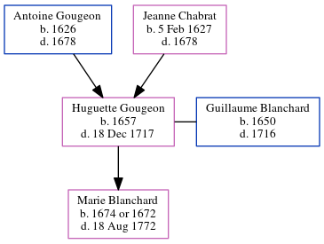

Huguette Blanchard (née Gougeon) 1657 - 1717
[ Home ] | [ Calendar ] | [ Surnames Index ] | [ Census Index ] | [ Family History ]The child of Antoine Gougeon and Jeanne Chabrat, Huguette Gougeon, the 9 times great-grandmother of Michele Copp (née Phillips), was born in Port Royal, , New Brunswick, Canada in 16571,2 and married Guillaume Blanchard (with whom she had 1 child, Marie) in Port Royal in 1672.
She died on Dec 18, 1717 in Port Royal, , Nova Scotia, Canada.
Parents
- Antoine was born in 1626
- Jeanne was born on Feb 5, 1627
Children
- Marie was born on Jan 1, 1674
Citations
- Family Data Collection - Births Online publication - Provo, UT, USA: The Generations Network, Inc., 2001.
- Family Data Collection - Individual Records Online publication - Provo, UT, USA: The Generations Network, Inc., 2000.
Family Tree
Generated by ged2site. Last updated on Jun 6, 2024